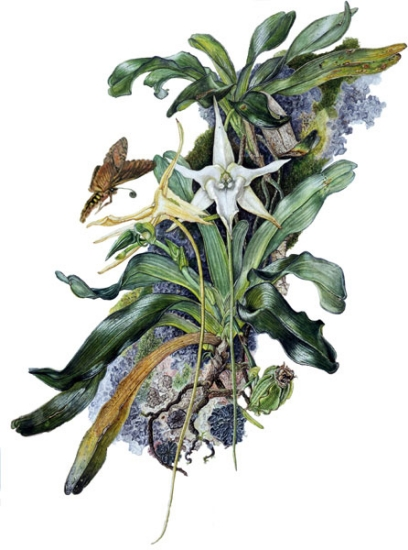
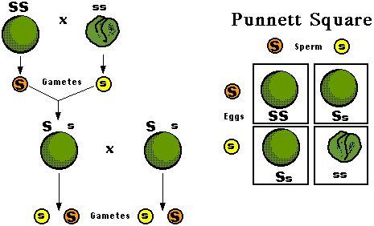
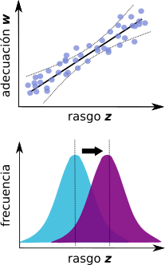
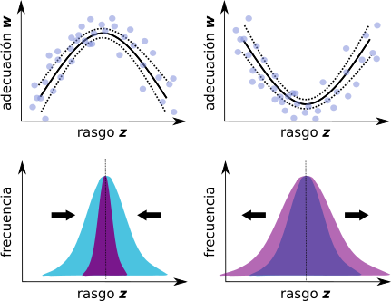
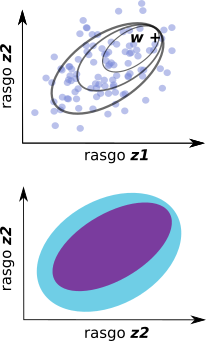
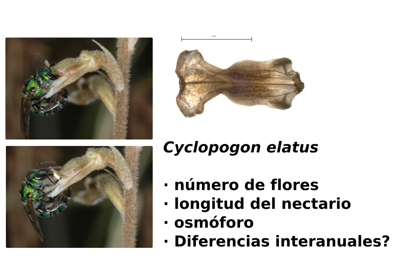
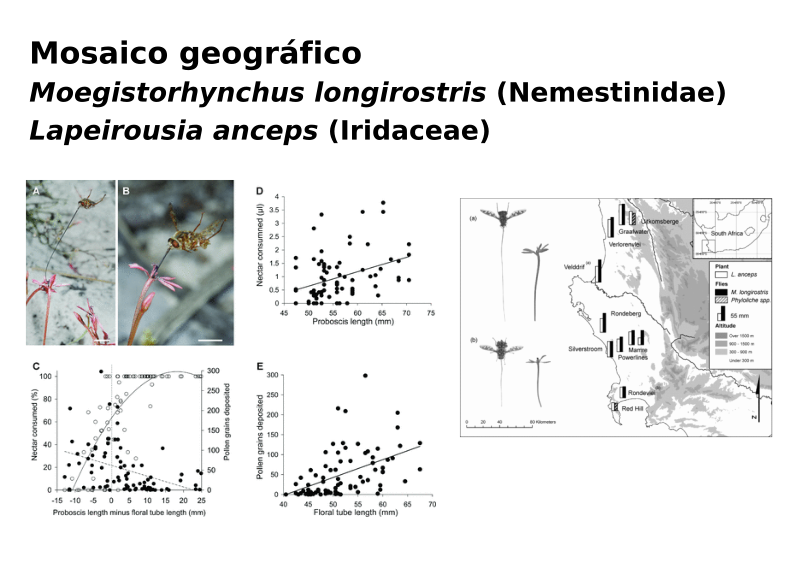

Métodos en Ecología Evolutiva
Santiago Benitez-Vieyra
¿Puede considerarse improbable, dado que indudablemente se han producido variaciones útiles para el hombre, que otras variaciones útiles … deberían a veces ocurrir en el curso de miles de generaciones? Si esto ocurre, ¿podemos dudar (recordando que nacen muchos más individuos de los que posiblemente pueden sobrevivir) que los individuos que tienen alguna ventaja, por pequeña que sea, … tendrían la mejor oportunidad de sobrevivir y de procrear su especie? Por otro lado, podemos estar seguros de que cualquier variación en el menor grado de daño sería destruida rígidamente. Esta preservación de variaciones favorables y el rechazo de variaciones perjudiciales, lo llamo Selección Natural.

Darwin 1872
A medida que ciertas polillas de Madagascar se volvían más grandes a través de la selección natural (…) o sólo su probóscis se volvía más larga para alcanzar el néctar de de Angraecum y otras flores tubulares, aquellas plantas de Angraecum que tuvieran los nectarios más largos (…) y que, por tanto, obligan a las polillas a insertar sus probóscides hasta la misma base, serían fertilizadas. Estas plantas producirían más semillas y las plántulas podrían, generalmente, heredar nectarios más largos
- Variaciones heredables.
- Reproducción diferencial.
- Agente de selección Polinizadores de Angraecum (otros organismos, factores abióticos, etc.)
- Blanco (target) de selección Espolones de la flor (rasgos fenotípicos en general)
Un poco de historia…
Gregor Mendel (1865)

Síntesis Moderna

Fisher (1918) The Correlation Between Relatives on the Supposition of Mendelian Inheritance
Selección sobre caracteres cuantitativos
Ecuación de los criadores univariada
\[\Delta \bar{z} = h^2s\]
- \(\Delta \bar{z}\) cambio en la media poblacional o respuesta a la selección
- \(h^2\) heredabilidad
- \(s\) diferencial de selección lineal
En este curso vamos a centrarnos en los métodos para estimar estos tres aspectos
- La respuesta a la selección, que es un cambio de una generación a la siguiente.
- La selección fenotípica, que estimamos a partir del éxito reproductivo diferencial de individuos con diferentes características.
- La heredabilidad, que estimamos a partir del parecido entre individuos relacionados por su parentesco.
Selección univariada
\[s_{i} = cov(w, z)\]
la selección sobre un rasgo es igual a la covarianza entre ese rasgo (\(z\)) y la adecuación relativa (\(w\), fitness).
¿Qué sucede cuando tenemos más de un rasgo?
Selección multivariada.
Lande & Arnold (1983). The measurement of selection on correlated characteres.
(…) selection on a particular trait produces not only a direct effect on the distribution of that trait in a population, but also produces indirect effects on the distribution of correlated characters. The problem of character correlations has been largely ignored in current methods for measuring natural selection on quantitative traits. Selection has usually been treated as if it acted only on single characters.
Gradientes de selección
\[w = \alpha + \sum{\beta_{i}z_{i}} + 1/2\sum{\gamma_{ii}z^2_{i}} + \sum\sum{\gamma_{ij}z_{i}z_{j}} + \epsilon\]
\(\beta_{i}\) lineal o direccional
\(\gamma_{ii}\) no lineal, estabilizadora/disruptiva
\(\gamma_{ij}\) no lineal, correlacional
Expresan cambios de naturaleza multivariada en la media, la varianza y la correlación de los rasgos.



¿Qué necesitamos para estudiar selección fenotípica en la naturaleza?
Requerimientos técnicos
- Población con suficientes individuos
- Medición de rasgos fenotípicos
- Estimación de la adecuación
- Ajuste de modelos
¿Qué necesitamos para estudiar selección fenotípica en la naturaleza?
Hipótesis adaptativa
- Establecer relaciones causales
- Manipulación del agente
- Manipulación del fenotipo
- “Experimentos naturales”
- Réplicas temporales o espaciales
- Manipulación del agente
Algunos ejemplos
 Benitez-Vieyra et al., Func. Ecol. 2006; Benitez-Vieyra et al., Evol. Ecol. 2012

Pauw et al. Evolution 2009

Sletvold et al. New Phyto 2010; Ecology 2011; 2012; Evolution 2016